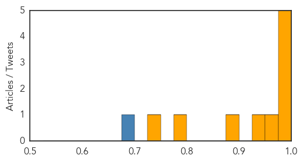

Influenza
30-Day Web Trend
0 alerts, 0 warnings

30-Day Twitter Trend
4 alerts, 0 warnings

Article Locations

Article Confidences
Top Articles:
- 1.000
- Fast-Spreading Bird Flu Causes Panic in China
- 0.998
- Young adults who skip flu shot show most severe symptoms
- 0.995
- Bird Flu Cases Up in China But No Human-to-Human Spread Seen
- 0.984
- Gov. Mary Fallin wants Oklahomans to get flu shot
- 0.980
- Hong Kong learns of seven new avian flu cases in China
- 0.964
- Fort Smith woman miscarries; dies from flu
- 0.944
- Two H5N1 Bird Flu Outbreaks Reported in Vietnam
- 0.888
- Discussion Update on Avian Influenza from IEC
- 0.777
- CDC says human H7N9 cases reach 200, most in China
- 0.736
- Winter ailments up as EP is hit by cold weather
Top Tweets:
- 0.844
- Assessing the impact of public health interventions on the transmission of pandemic H1N1 influenza a virus aboard ... http://t.co/Mlii3QMWAz
Mumps
30-Day Web Trend
1 alerts, 0 warnings

30-Day Twitter Trend
0 alerts, 0 warnings

Article Locations

Article Confidences

Top Articles:
Top Tweets:
-
No tweets found for Feb 11, 2014